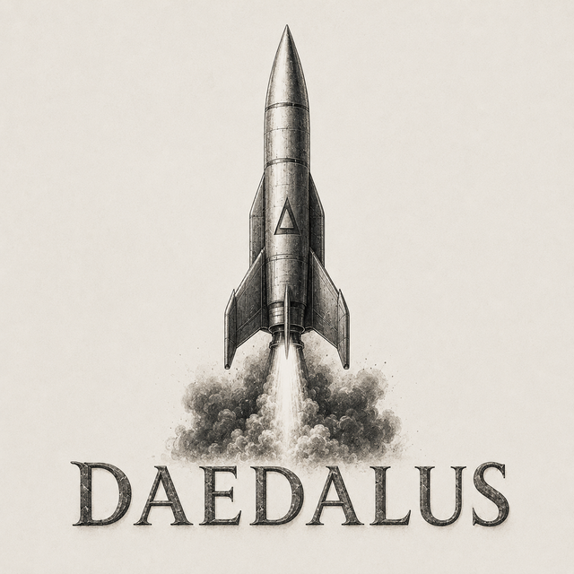
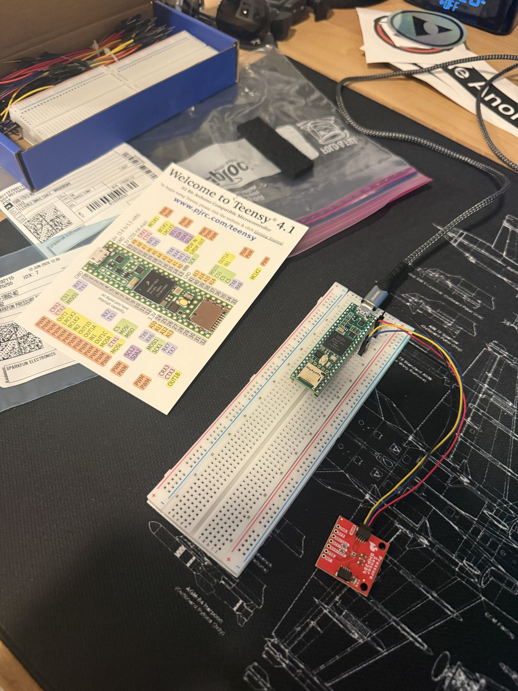

A custom rocket flight computer built from the board up — scratch-written embedded firmware on a Teensy 4.1, designed to be validated through a software- and hardware-in-the-loop test pipeline before it ever leaves the pad.

Daedalus is a personal R&D project to design, build, and qualify a rocket flight computer end-to-end — the printed circuit, the sensor suite, the embedded flight software, and the test infrastructure that proves it works. The goal isn't just a board that boots; it's a system whose behavior is verified in simulation and on the bench before any real flight.
Every guidance, navigation & control path is exercised in a simulated environment first, so the firmware that flies is the firmware that's already been proven against thousands of synthetic trajectories.
Sensor drivers, state estimation, flight state machine, data logging, and a ground-test harness — all written from scratch in C++ on bare-metal Teensy, with no flight-controller framework underneath.
Daedalus is in Phase 1 — hardware bring-up. The core compute and the barometric sensor are alive on the bench; the next milestones build the full sensor suite and the simulation harness around it.
Teensy 4.1 running on the breadboard with a BMP384 barometric pressure sensor wired over I²C. Validating clocks, power, bus communication, and clean sensor reads as the foundation for everything above it.
Integrate the ICM-20948 IMU and NEO-M9N GPS, then fuse barometric altitude, inertial, and position data into a real-time state estimator for attitude and altitude.
Stand up software-in-the-loop simulation of full flights, then hardware-in-the-loop replay on the real board to catch timing and integration faults the simulator can't.
Custom PCB, vibration and power-cycle bench testing, static rehearsals, and a maiden flight with full telemetry capture for post-flight reconstruction.
A compact, high-rate avionics package chosen for deterministic timing and proven aerospace-grade sensing.
600 MHz ARM Cortex-M7 — the brain running the bare-metal flight firmware.
9-DoF IMU: 3-axis gyro, accelerometer & magnetometer for attitude.
High-resolution pressure sensor for altitude and apogee detection.
Multi-band GNSS receiver for ground-truth position and recovery.

The very first Daedalus build: a Teensy 4.1 and a BMP384 barometric sensor talking over I²C, wired up on a breadboard atop a blueprint mat. Not glamorous — but this is where every flight computer earns its trust, one clean sensor read at a time.
The flight software is written from scratch in C++ and validated through a layered test pipeline — so failures surface on a laptop or a bench, never at apogee.
Synthetic trajectories & sensor data drive the firmware through full mission profiles.
The exact flight code runs against the simulator — logic verified end-to-end.
Real board, simulated world — catches timing & integration faults pre-flight.
On-board logging captures every state for post-flight reconstruction.
Sensor drivers, a deterministic main loop, a flight state machine (boot → armed → boost → coast → apogee → descent → recovery), and high-rate data logging — written directly against the hardware in C++.
Tooling to drive simulations, replay recorded flights, and visualize estimator output — turning every run into data that hardens the next iteration.